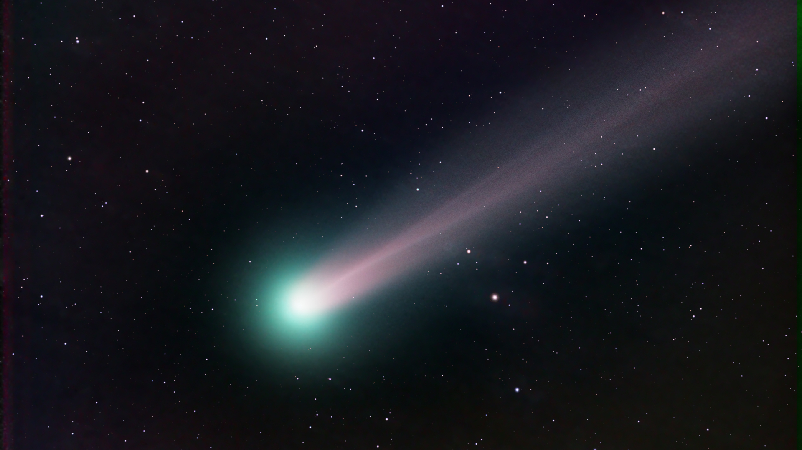

Comet

1. What is a Comet?
A comet is a celestial body composed of ice, dust, and small rocky particles. They travel in highly elliptical (long oval) orbits around the Sun. Because they originate from the cold outer reaches of the solar system, they are often nicknamed "dirty snowballs."
2. Main Parts of a Comet

As a comet approaches the Sun, its structure becomes clearly visible:
- Nucleus: The core of the comet. It is a solid structure made of frozen gases and dust.
- Coma: The cloud of gas and dust that forms around the nucleus as the ice begins to vaporize due to the Sun's heat.
- Tail: Solar winds push the gas and dust away from the Sun, creating a glowing tail that can stretch for millions of kilometers.
3. Where Do Comets Come From?
Scientists believe comets originate from two primary regions:
- Kuiper Belt: A region of icy objects located just beyond the orbit of Neptune.

- Oort Cloud: A giant spherical shell surrounding the entire solar system, containing billions of icy bodies at its very edge.

4. Famous Comets
- Halley’s Comet: The most famous comet, which becomes visible from Earth every 75–76 years. (It is predicted to appear next in the year 2061).
- Hale-Bopp: One of the brightest comets ever observed, which was clearly visible to the naked eye in 1997.
Fascinating Facts
- Tail Direction: Regardless of which way the comet is moving, its tail always points away from the Sun because of the solar wind.

- Meteor Showers: When Earth passes through the trail of dust left behind by a comet, we experience "meteor showers."

If you found this information helpful, please use the link below to visit our YouTube channel. Subscribe and support us to help us continue creating more content like this.
- Infinity Thinkers Laboratory